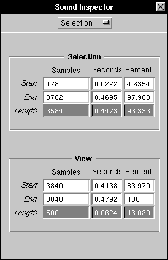

The Selection Inspector
The Selection Inspector displays the position and length of the part of sound that is selected or visible in the window, and allows you to precisely set the selection in samples, seconds or percent. To display the Selection Inspector, you need to bring up the Sound Inspector with the Tools Menu, and then choose Selection: 

 The Selection grid displays the number of samples, number of seconds, or percentage of sound at the start and end of the selected part of the sound, and subtracts the start from the end to get the length of the selection. By entering a value in any text field in the selection grid and pressing Enter, you can change the sound selection precisely. Your value may be adjusted to the nearest value displayable at the current scaling resolution (to change this, see Zoom Factors
The Selection grid displays the number of samples, number of seconds, or percentage of sound at the start and end of the selected part of the sound, and subtracts the start from the end to get the length of the selection. By entering a value in any text field in the selection grid and pressing Enter, you can change the sound selection precisely. Your value may be adjusted to the nearest value displayable at the current scaling resolution (to change this, see Zoom Factors  ).
).
 The View grid displays the number of samples, number of seconds, or percentage of sound at the start and end of the part of the sound currently visible in the window, and subtracts the start from the end to get the length of the visible section. Currently you cannot change view information here.
The View grid displays the number of samples, number of seconds, or percentage of sound at the start and end of the part of the sound currently visible in the window, and subtracts the start from the end to get the length of the visible section. Currently you cannot change view information here.